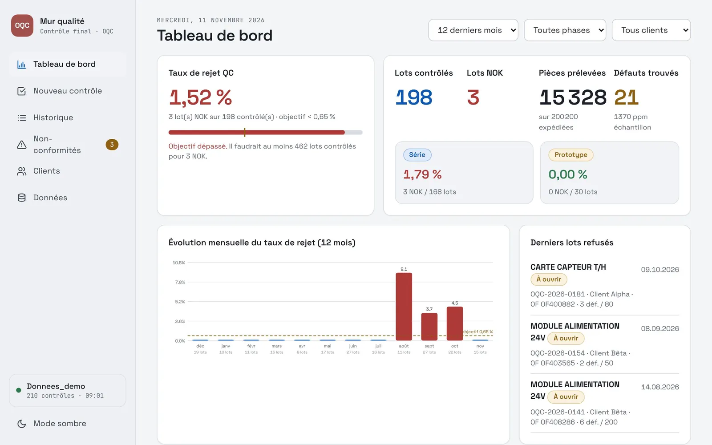
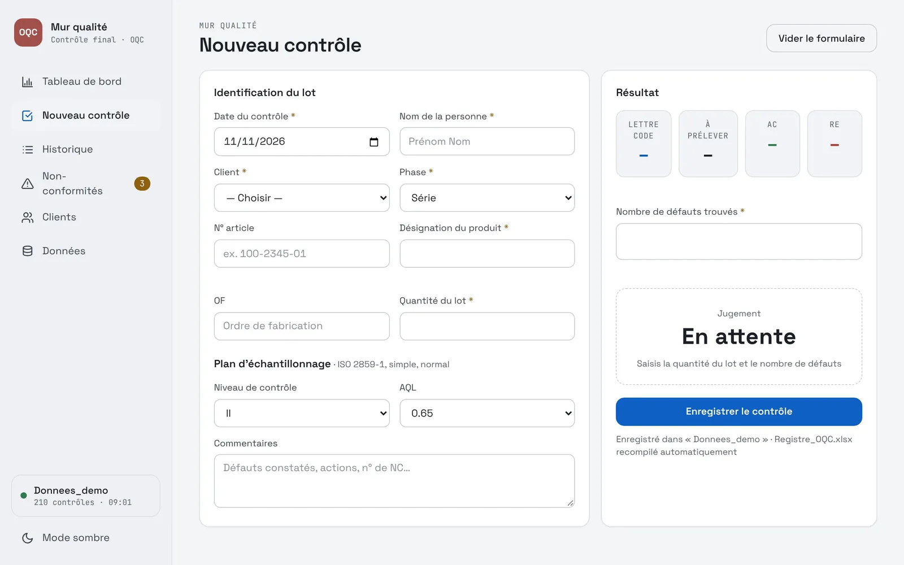
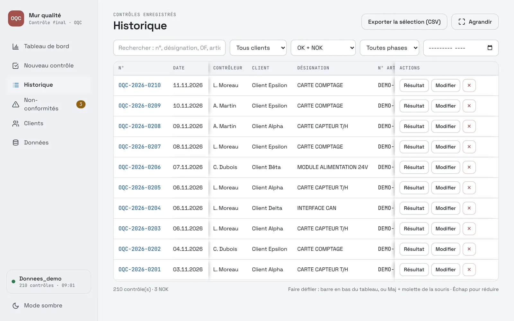
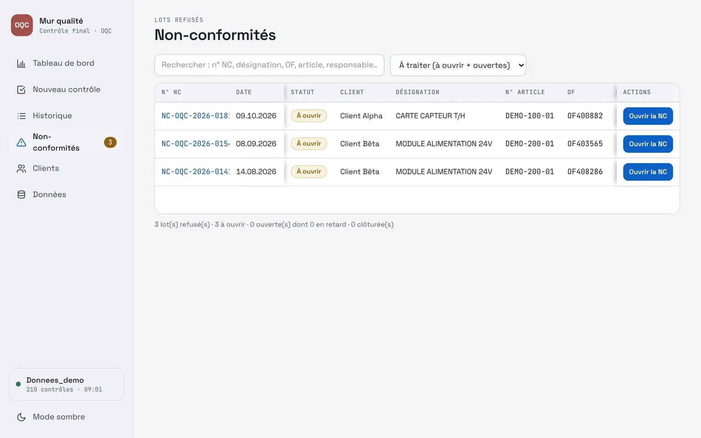
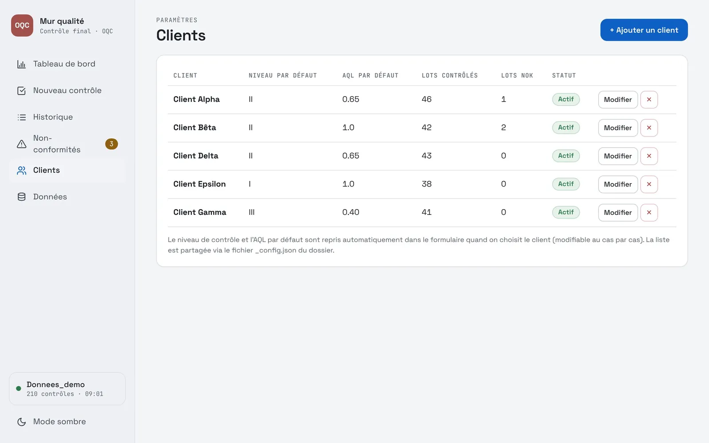

← Revenir aux applications
Expédition · OQC
Le bon échantillon, le bon verdict, à chaque lot
Avant expédition, l'app donne la taille de l'échantillon et les critères d'acceptation selon l'ISO 2859-1, enregistre le contrôle et tient le taux de rejet à jour.
Le problème
Avant : des indicateurs calculés à la main
Avant
- Indicateurs de contrôle final calculés à la main
- Une présentation à refaire à chaque fois
Quelques minutesà chaque calcul d'indicateur
Maintenant
- Le plan d'échantillonnage se calcule dès la saisie du lot
- Le verdict tombe avec le nombre de défauts
- Taux de rejet et indicateurs à jour après chaque contrôle
- Des rapports de non-conformité propres, prêts à partager
Automatiqueet une présentation professionnelle
L'application
Du lot contrôlé à la non-conformité traitée
Contrôle par lot
La saisie suit le déroulé du contrôle.
- Plan d'échantillonnage ISO 2859-1 : lettre-code, taille, Ac et Re
- Niveau de contrôle et NQA par client
- Verdict OK ou NOK calculé à la saisie des défauts
- Phases série et prototype suivies séparément
- Historique complet, export du registre
Suivi et non-conformités
Ce qui sort du contrôle est suivi jusqu'au bout.
- Taux de rejet par mois, par phase et par client
- Objectif affiché et écart à l'objectif
- Fiche de non-conformité pour chaque lot refusé
- Rapport de non-conformité imprimable
- Derniers lots refusés toujours visibles
Captures
L'application en images
Données d'exemple fictives.





Sous le capot
Simple à déployer, solide à l'usage
Un fichier HTMLS'ouvre dans Edge ou Chrome. Rien à installer, aucun serveur.
Tables de la norme intégréesLettre-code, taille d'échantillon, Ac et Re sans ouvrir la norme.
Dossier partagéUn contrôle par fichier, numéroté automatiquement.
Rien n'est écraséLes modifications d'un autre poste sont détectées.
Export ExcelLe registre des contrôles sort en un clic.
Socle communMême thème et même stockage que les autres applications.